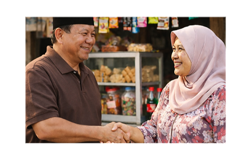
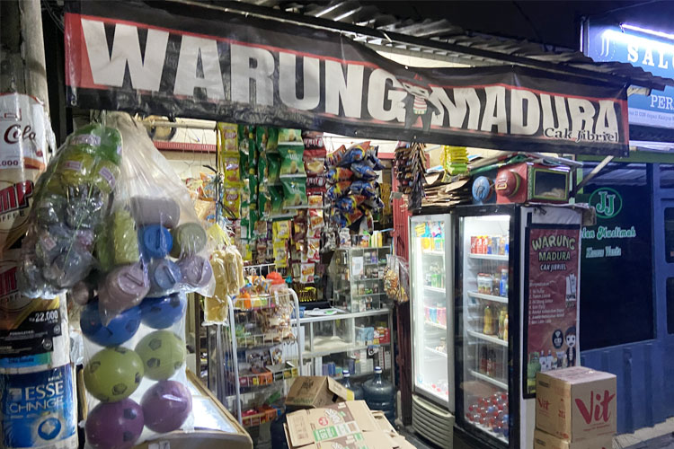

Galeri Umum

Pak Prabowo pernah beli disini

Tampilan depan warung

Rak sembako lengkap dari beras, gula, sampai minyak goreng paling lezatt dan sedap
Galeri Stok Barang

Stok minuman dingin

Stok galon dan gas

Sembako lengkap